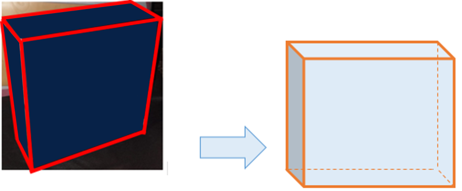
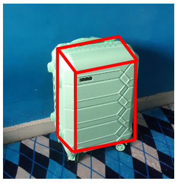

Pengantar Bangun Ruang
Jika kita perhatikan, di sekitar kita terdapat benda-benda
dengan berbagai macam bentuk dan mempunyai ruang.
Mempunyai ruang yang dimaksud adalah benda yang di dalamnya
bisa diisi dengan sesuatu. Contohnya saja adalah bungkus barang,
bungkus barang banyak yang berbentuk kubus dan balok. Kubus dan
balok merupakan salah satu bangun ruang. Contoh bungkus barangnya
adalah kardus biskuit makanan berbentuk balok pada gambar dibawah ini.

Balok memiliki enam sisi. Pada bangun ruang, sisi merupakan bidang yang membatasi bangun. Selain itu, jika kamu sedang berkeliling ke toko-toko yang menjual barang-barang kamu akan menemukan berbagai macam benda yang berbentuk balok. Kamu pasti sudah mengenali bentuk koper. Kamu bisa melihat koper yang ada di toko-toko tersebut atau kamu mempunyai koper di rumah maupun melihat bentuk koper dari gambar. Seperti kita lihat pada gambar di bawah ini adalah koper berbentuk balok.

Selain balok, bangun ruang lainnya yang akan dipelajari adalah
kubus. Kubus dan balok merupakan benda yang dapat dihitung volumenya.
Bagaimana menghitung volume pada balok dan kubus? Kita akan mempelajarinya. Sebelum kita mempelajari volume balok dan kubus, kita mulai dengan mempelajari pangkat tiga dan akar pangkat tiga terlebih dahulu dan akan
mengaitkannya dengan bagaimana kita menentukan volume bangun ruang kubus dan balok.
Gambar 4. Kubus 3 Dimensi
Gambar 5. Balok 3 Dimensi
Gambar 1. Kardus Biskuit Gambar 2. Sketsa Kardus Biskuit
Balok memiliki enam sisi. Pada bangun ruang, sisi merupakan bidang yang membatasi bangun. Selain itu, jika kamu sedang berkeliling ke toko-toko yang menjual barang-barang kamu akan menemukan berbagai macam benda yang berbentuk balok. Kamu pasti sudah mengenali bentuk koper. Kamu bisa melihat koper yang ada di toko-toko tersebut atau kamu mempunyai koper di rumah maupun melihat bentuk koper dari gambar. Seperti kita lihat pada gambar di bawah ini adalah koper berbentuk balok.
Gambar 3. Koper
Berikut ini gambar 3 dimensi dari bentuk kubus. Geser ke kanan atau
ke kiri yang berbentuk bulat  untuk memutar kubusnya.
untuk memutar kubusnya.
Berikut ini gambar 3 dimensi dari bentuk balok. Geser ke kanan atau
ke kiri yang berbentuk bulat  untuk memutar baloknya.
untuk memutar baloknya.
Gambar 5. Balok 3 Dimensi